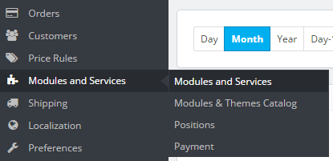
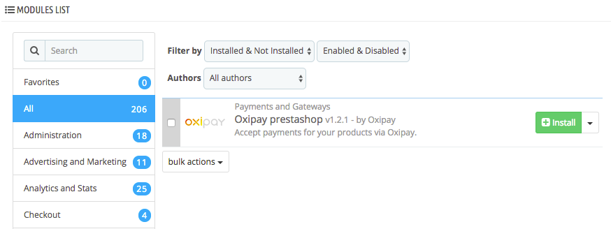
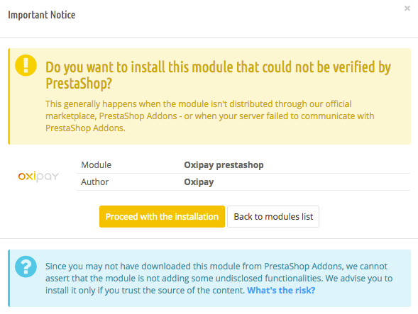

Setting up Oxipay on a PrestaShop Store
This document outlines the steps needed to install Oxipay on your PrestaShop store.
1.6.1.9. Please note, however, that the plugin should still be compatible with PrestaShop versions 1.6.X and 1.7.X.
Installing Oxipay
The plugin can be installed automatically via PrestaShop's admin panel. This section details how to upload the plugin, and install and configure its various parameters for it to work properly.
Installation Procedure
1 - Navigate to the following URL and select the zip file to download the Oxipay plugin.
https://github.com/oxipay/oxipay-prestashop/releases
2 - Log into your PrestaShop's admin area.

3 - Once logged in, you will be presented with your store's dashboard. From the side menu that appears to the left, hover over Modules and Services and then click on Modules and Services from the sub-menu that appears.

4 - This will take you to the Modules and Services page and will display a list of modules that are available to you that can be either installed or configured on your store.
5 - Scroll down until you bring the Modules List panel into focus. Ensure that the two Filter by drop-downs are configured to display Installed & Not Installed plugins as well as those that are Enabled & Disabled.


6 - Scroll to the top of the page and then click on the Add a new module icon. This will open up the Add a new module panel.

7 - From within the Add a new module panel, click on Choose a file. This will allow you to specify the folder or directory that contains the Oxipay .zip plugin. Once selected, click on Upload this module to initiate the uploading of the plugin.

8 - If the upload of the plugin was successful, you will be presented with a success alert at the top of the page.

9 - To confirm that the plugin was successfully uploaded to PrestaShop, scroll downwards and bring the Modules List panel into focus. In the search field in the top left hand corner of the panel, type in oxipay as per the screenshot below. This will filter all modules out but will leave the Oxipay PrestaShop module in focus.

10 - Click on the green Install button next to the Oxipay PrestaShop listing.

11 - Clicking on Install will display a prompt requesting that you confirm that you want to go ahead with the installation of the plugin even though it has not been verified by PrestaShop. Click on the orange Proceed with the Installation button.

12 - If the installation is successful, you will be re-directed to the the Oxipay module configuration page with a message at the top of the page indicating that the module was installed successfully.
Configuring Oxipay
This section details the various parameters that you would need to configure for you to be able to process payments via the Oxipay payment gateway. This includes things such as the plugin's logo, Oxipay endpoints to communicate with, as well as whether or not to enable Test Mode.
- Title This configures the plugin title that gets displayed to the end user during checkout. By default it is configured to Oxipay but you have the option of changing it to something else such as Oxipay Australia or Oxipay Payment Gateway, for instance.

- Logo This controls the Oxipay Logo that gets displayed.

.svg file. Then upload it to through the Logo config option by clicking on Add file.
There is no need to resize the Oxipay logo. You can save it in its full dimensions and it will resize to suit your Oxipay store.
- Description This configures the plugin description text that gets displayed to the end user as part of the checkout process. By default, it is configured to Breathe easy with Oxipay, an interest-free instalment payment plan but you have the option of changing it to something else.

- Oxipay Gateway URL This specifies the live Oxipay end-point that the plugin would need to communicate with for it to be able to process payments via Oxipay. Note that transactions processed over this URL are real transactions that end up in real dollar amounts being deducted.

- Oxipay Sandbox Gateway URL This specifies the test Oxipay end-point that the plugin would need to communicate with when Test Mode is enabled. This is mainly used for troubleshooting purposes, particularly if we want to simulate test transactions on your PrestaShop store without having real dollar amounts debited from Credit Cards.

- Merchant ID This is the Oxipay Merchant ID that you are provided with as part of your on-boarding when signing-up for Oxipay.

- API Key The API Key or the Encryption key is a case-sensitive alpha-numeric sequence that is used to authenticate payment requests originating from your store. It is vital that you protect it and don't provide it to unauthorised individuals.

- Test Mode Indicates whether to process payments over the live Oxipay Gateway URL resulting in real transactions, or to process it over the Oxipay Sandbox Gateway URL which will produce simulated (test) transactions with no real dollar amounts being debited. By default it should be set to No unless we are attempting to diagnose issues on your store to do with Oxipay, or you're testing integrating the plugin with your online PrestaShop store.

Once you have finished making the necessary configuration changes or updates, click the Save button on the bottom left. If successful, you will be presented with a message at the top of the page similar to the screenshot below.

Quick Config Actions
PrestaShop allows you to perform quick actions on your installed modules such as disabling the plugin on specific devices or uninstalling it. Although not technically part of the Quick Config Actions sub-menu, you also have access to the Configure button. Clicking on it will take you to the Oxipay Configuration.
Below is a summary of how to bring up the Quick Config Actions sub-menu:
1 - Log into your PrestaShop admin panel.
2 - Hover over the Modules and Services option on the left side menu, then click on the Modules and Services item on the sub-menu that appears.
3 - This will re-direct you to the List of Modules page.
4 - Scroll down until you bring the Modules List panel into focus and type Oxipay in the search field in the panel's top left corner. This will bring the Oxipay module into focus and filter out all other modules.
5 - If you want to bring up the full Oxipay Configuration page, then click on the Configure button.
6 - Otherwise, clicking on the arrow next to the Configure button will open a drop-down menu similar to the one shown in the screenshot below.
Here is a quick summary of the various Configure options available to you:
- Disable: Disables the plugin but leaves it installed on your PrestaShop. You can re-enable it with its existing settings at a later time. Oxipay will not appear as a payment option on your store once disabled.
- Disable on mobiles: This option disables Oxipay only on mobile devices (or smartphones, such as iPhones). This does not apply to tablets (such as iPads) or desktop computers.
- Disable on tablets: Disables Oxipay on tablets but not smartphones or desktop computers.
- Disable on computers: Disables Oxipay on desktop computers only.
- Reset: Resets the Oxipay module to its original state without any of the configuration settings that have been applied post installation.
- Uninstall: Uninstalls the plugin from your store. The plugin will still be available and you will be able to install it at a later time without having to upload it again.
- Mark as Favorite: Marks Oxipay as one of your favourite plugins so that it becomes available from within the Favourites category list on the left hand side of the Modules List panel.
- Delete: Completely removes the plugin from your store. The plugin will no longer be available for installation again and the only way to add Oxipay back to your store as a payment method would be to perform the instructions in the Installing Oxipay section of the document again.
Upgrading Oxipay
Upgrade your Oxipay PrestaShop plugin then install the newer version. To uninstall the plugin you need to:
1 - Open up the Quick Config Actions using the instructions in the Quick Config Actions section of this document.
2 - From the drop-down menu that appears, click Delete.

3 - This will display a pop-up in your browser similar to the one shown in the image below.

4 - Click OK. This will initiate the deletion of the Oxipay plugin. Once completed, you will be presented with a success message at the top of the page similar to the one shown in the screenshot below.

5 - You can now download the newer version of the Oxipay PrestaShop plugin and install it as per the instructions in the Installing Oxipay section of this document.